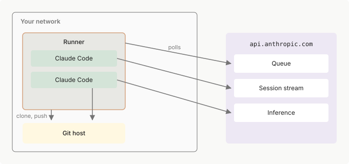

自托管环境
在您控制的基础设施上运行 Claude Code 云会话：设置自托管环境、部署运行器，并将会话路由到您自己的计算资源。
自托管环境在 Team 和 Enterprise 计划上处于公开测试阶段，默认关闭。请参阅可用性和限制了解启用路径和排除的内容。
自托管环境在您的组织运营的基础设施上执行 Claude Code 云端会话。云端会话是指在开发者机器以外的任何地方运行的会话。开发者可以从 claude.ai、移动和桌面应用、带有 claude --cloud 的终端以及云端定时任务启动这些会话。默认情况下，云端会话在 Anthropic 的基础设施上执行。
在自托管环境中，这些相同的会话在您的网络内执行。除了可用性和限制中的差异以及部署页面的已知问题之外，开发者体验完全相同。
- 如果您的团队不使用云端会话，这里没有什么需要配置的：终端或 IDE 中的会话始终在开发者自己的机器上运行
- 如需在自己的常开机器上运行 Claude Code 并从其他设备驱动它，请使用 Remote Control，它也可在 Pro、Max 和 Ultra 计划上使用
- 当您准备好设置时，直接转到快速入门；如需先审查安全态势，请从部署到生产开始
要了解自托管的工作原理以及何时选择它，请阅读自托管环境的工作原理和为什么选择自托管。
自托管环境如何工作
自托管有三个部分：
- 环境：云会话可以发送到的命名目标。您的组织在 claude.ai 管理员设置中创建环境，每个环境都组织一组运行器。
- 运行器：在您网络内的主机上运行的程序。运行器执行会话；其思想与自托管 CI 运行器相同。
- 会话：开发者启动的一个 Claude Code 任务。
当开发者启动云端会话时，会话启动 UI 显示一个环境选择器，列出 Anthropic 托管的环境以及您的组织创建的任何环境。如果他们选择您的环境，Anthropic 的控制平面将会话放在您的环境队列上，运行器认领它，克隆开发者选择的仓库，并在您的主机上启动 Claude Code 进程来运行它。运行器使用您配置的凭据向您的 git 主机进行身份验证；配置 git涵盖了这些选项。会话从您网络内部到达您的内部服务，当您的 git 主机是内部的时，也以相同的方式到达它；到 Anthropic 的流量，即队列轮询、会话的事件流以及默认情况下的模型推理，是到 api.anthropic.com 的出站 HTTPS，会话还可以到达的其他少量主机列在网络要求中。Anthropic 从不连接到您的网络。

图中的两个 Claude Code 框是会话进程：一个运行器同时执行两个会话，达到其配置的容量。运行器一次为一个所有者服务，并在声称其第一个会话时锁定到该所有者，因此检出的代码永远不会在所有者之间混合；运行器生命周期涵盖了这个规则。
您可以自己启动运行器并保持它们运行，或运行自动扩展编排器，这是您托管的第二个进程，它在会话排队时启动运行器。无论哪种方式，您都只需设置一次环境，它会出现在每个支持的使用入口上的选择器中。
可用性和限制
在规划推出之前检查这些：
- 计划：Team 和 Enterprise 组织的公开测试版。自托管环境默认关闭；所有者在云环境管理页面上打开允许自托管环境，这需要为组织启用 cloud sessions。
- 零数据保留和 HIPAA：对于启用了零数据保留或应用了 HIPAA 配置的组织不可用。
- 模型推理：会话使用 Anthropic API，除非您将 runner 配置为将模型请求发送到 Amazon Bedrock 或 Google Cloud 的 Agent Platform。在这两种情况下，会话内容都会发送给 Anthropic。在以这种方式配置的 runner 上，来自 claude.ai 的服务器托管设置和组织策略不会作用于会话。
- 使用入口：从 claude.ai/code、移动和桌面应用、云端定时任务以及终端启动的会话，带有
claude --cloud或--environment调度，可以在自托管环境中运行。Claude Tag 会话也可以在其中运行，但 Claude 还不能在这些会话中使用访问包。Claude Security 和 Code Review 会话还不能路由到它们。对这两个使用入口的支持将单独跟进。 - 仓库：会话从 GitHub 或 GitHub Enterprise Server 检出仓库。通过
--environment调度启动的会话还可以使用其他 git 主机： - GitHub：请参阅 GitHub 身份验证选项。
- GitHub Enterprise Server：请参阅其网络要求。
- 其他 git 主机：请参阅使用
--environment启动会话的要求。 - 计费：自托管环境中的会话消耗您的组织的 Claude Code 使用情况，与 Anthropic 托管环境中的会话相同。
为什么选择自托管
大多数团队由 Anthropic 托管的环境更好地服务，这不需要基础设施来运行或维护。自托管适用于网络、工具或合规要求要求在其控制的基础设施上保持会话执行的团队。如果是这样，请为其承载的运营所有权做好计划：您构建和维护运行器镜像、运营舰队并控制其网络。
作为交换，自托管为您提供网络访问、自定义工具和合规控制：
- 网络访问：会话在您的网络内运行，可以到达内部服务、数据库和注册表，而无需将它们暴露给公网
- 自定义工具：在您的运行器镜像中预安装编译器、SDK 和内部 CLI，以便每个会话都准备好构建
- 合规：仓库检出和构建产物保留在您控制的基础设施上。会话内容仍然发送到
api.anthropic.com。
环境、运行器和会话
环境在 claude.ai 管理员设置中的云环境页面上管理；运行器是您在自己的基础设施上启动和管理的进程。
关键概念
这些术语在整个自托管页面中出现：
| 术语 | 它是什么 |
|---|---|
| 环境 | 您的运行器的命名组，在 claude.ai 设置中创建。会话被路由到环境，而不是单个运行器。 |
| 环境密钥 | 运行器用来向环境进行身份验证和注册的单个共享凭证。在环境创建时显示一次，在管理 UI 中标记为环境密钥。 |
| 运行器 | 您部署的长期进程。运行器向环境注册、接收运行器令牌并轮询会话。 |
| 会话 | 一个 Claude Code 任务，从 claude.ai、移动应用或其他 Anthropic 使用入口（如定时任务或 Agent）启动。每个会话作为运行器生成的子 Claude Code 进程运行。 |
在 API 字段、令牌声明和指标名称中，环境显示为 pool，环境 ID 是 pool_id。参考映射两个拼写，包括已弃用的 pool 标志名称。
运行器一次为一个所有者服务。运行器拾取的第一个会话将运行器锁定到该会话的所有者，然后运行器仅为该所有者运行会话，达到配置的容量。所有者是谁取决于会话如何启动：
- 用户启动的会话：所有者是该用户的帐户。
- Claude Tag 频道会话：Claude 运行它们时没有附加用户帐户，因此所有者是启动会话的 Claude Tag 代理。该代理启动的每个频道会话都有相同的所有者，无论谁发送了 Slack 消息，因此当您在
--capacity大于 1 或正--drain-grace-sec时运行它时，锁定到它的运行器为不同的人启动的会话服务。
因此，最小舰队大小是您期望同时活跃的所有者数量，计算用户和 Claude Tag 代理。
会话生命周期
当开发者启动会话并选择您的环境时，Anthropic 的控制平面将会话放在环境的队列上。从那里：
- 具有可用容量的运行器声称会话并对其持有租约。
- 运行器将存储库克隆到其工作目录中并生成子 Claude Code 进程。
- 子进程通过 HTTPS 流回事件，而运行器继续轮询；每次轮询刷新租约并充当心跳。
- 如果运行器停止轮询，其租约会在大约 60 秒后失效。之后，服务器可能需要几分钟、有时更长时间才能将会话重新排队给另一个运行器。
运行器给每个轮询请求 10 秒。当请求超时、丢失或获得运行器无法解析的响应时，运行器继续为其活跃会话服务，并在一两秒后重试，而不是等待下一个计划的轮询。例如，一个拦截代理用自己的页面回答轮询会产生运行器无法解析的响应。每次另一个请求以这些方式之一失败时，运行器会将下一次重试前的间隔加倍，最多 20 秒，并在租约即将过期时缩短间隔。
运行器生命周期
运行器拾取的第一个会话将运行器锁定到该会话的所有者，运行器为该所有者运行最多 --capacity 个并发会话。当运行器有活跃会话且未收到关闭信号或达到其退休时间时，运行器继续声称锁定所有者的排队工作。一旦它们完成会发生什么取决于 --drain-grace-sec：
- 在默认值
0处：运行器在其活跃会话完成后立即退出，不轮询更多，因此您部署它的编排器（如 Kubernetes）可以用新鲜磁盘重启它，准备为任何所有者服务。 - 在正值处：运行器在退出前继续轮询锁定所有者的队列那么多秒。
这个生命周期隔离了每个所有者的检出代码，而无需运行器在所有者之间删除磁盘状态。
您的基础设施停止运行器的方式决定了您是否需要 --retire-at。传递 SIGTERM 的杀死不需要标志：运行器按照关闭时序描述的方式排水，或当您设置 --defer-shutdown-max-min 时保持为其已持有的会话服务。如果您的基础设施改为在已知的挂钟时间销毁主机而不发送信号，或者宽限期太短而无法排水，例如沙箱生命周期上限或现场实例回收，请传递 --retire-at <epoch-seconds> 设置为该时间前几分钟。在退休时间：
- 运行器停止接受新工作。
- 运行器通过
--release-idle-session-min标志使用的相同释放路径释放每个活跃会话，因此当用户发送下一条消息时，会话在新运行器上恢复。运行器何时释放每个会话取决于其状态：
* 对于处于轮次中途的会话，运行器会在该轮次完成后释放它。它首先等待会话的进程向 Anthropic 报告该轮次结束，等待时间不超过SELF_HOSTED_RUNNER_POST_TURN_SETTLE_MS。在 v2.1.280 之前，运行器会在轮次完成后立即释放会话。
* 当轮次完成并留下后台任务运行时，运行器等待最多 60 秒，然后释放会话，即使它们仍在运行。如果任务已完成但读取其结果的后续轮次还未运行，运行器保持会话直到该轮次完成，并等待不超过SELF_HOSTED_RUNNER_BG_RESULT_GRACE_MS以便该轮次开始。 - 运行器在所有会话都被释放后以 0 退出。
超过杀死的转仍然丢失；关闭时序涵盖了调整边距的大小。没有 --retire-at，无信号主机杀死与崩溃无法区分：控制平面记录丢失的工作者而不是干净释放，会话重新排队给另一个运行器。
网络路径
运行器及其会话进行多种出站连接，不需要来自 Anthropic 的入站连接：
- 控制平面：运行器轮询
api.anthropic.com以获取工作并发布设置进度和失败事件，全部出站 HTTPS。轮询充当运行器的心跳。 - Git：运行器通过 HTTPS 或 SSH 从您的 git 主机克隆和推送，使用您的部署提供的凭据进行身份验证。请参阅配置 git了解各选项，包括每个会话铸造的凭据。使用 Anthropic git 代理时，github.com 上仓库的 git 流量改为经由
api.anthropic.com传输。 - 会话子进程：子 Claude Code 进程保持与
api.anthropic.com之间的会话事件流，并自行发起出站调用，用于模型推理以及会话期间运行的 git 命令。在使用 Anthropic 托管 git 的会话中，子进程会打开一个到api.anthropic.com的 WebSocket 连接，该连接承载来自git和gh的 github.com 流量。 - SCM 连接器：可选的编排器 SCM 连接器不可用，因此其隧道不会打开。该隧道是到
api.anthropic.com的 WebSocket 连接。
请参阅网络要求了解完整的出站列表。上面的图显示了这些路径，但可选的 SCM 连接器和 Anthropic 托管的 git 连接除外。
默认情况下，模型推理使用 Anthropic API。控制平面将 API 端点传递给每个会话，会话使用 Anthropic 颁发的会话范围的 OAuth 令牌进行身份验证。如需改为将模型请求发送到您自己的云帐户，请参阅将模型请求发送到 Bedrock 或 Agent Platform。
支持企业出站代理。运行器和可选的自动扩展编排器遵守网络配置中描述的代理和 mTLS 环境变量，例如 HTTPS_PROXY 和 NO_PROXY；在每个进程的环境中设置它们。这些变量涵盖控制平面调用、编排器的 SCM 连接器 WebSocket 和 HTTPS 远程的内置克隆，会话从运行器继承它们。会话流使用 HTTPS 上的服务器发送事件，因此路径中的代理不能缓冲响应。
- 代理身份验证：如果您的代理还需要
Proxy-Authorization标头，运行器可以将其添加到它打开到代理的每个连接；请参阅向出站代理进行身份验证。 - 长连接响应：如果运行器拾取了会话，但 Claude 始终没有回答其第一条消息，原因可能在于您的代理。请参阅会话已被拾取，但 Claude 始终没有回答其第一条消息。
保留在您的基础设施上的内容
仓库检出、构建产物、密钥以及会话创建或修改的任何文件都保留在您配置的机器上。对话本身，包括提示词、回复和工具结果，会发送到 api.anthropic.com，Anthropic 会存储会话记录，以便您可以从另一个受支持的使用入口恢复会话。当运行器将模型请求发送到 Amazon Bedrock 或 Google Cloud 的 Agent Platform 时，对话仍会通过会话的事件流发送到 api.anthropic.com。
自托管环境将会话执行移到您的网络中。控制平面仍然是 Anthropic 托管的：会话编排、队列和 claude.ai 界面继续在 Anthropic 的基础设施上运行。
开始使用
自托管环境页面按您正在做的事情组织：